滤波器分类
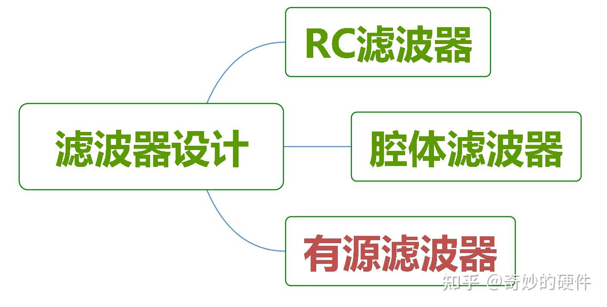
说到滤波器，大家肯定首先想到的是RC滤波，微带滤波，腔体(介质)滤波器等。“有源滤波器”总是显得非常模糊且神秘。
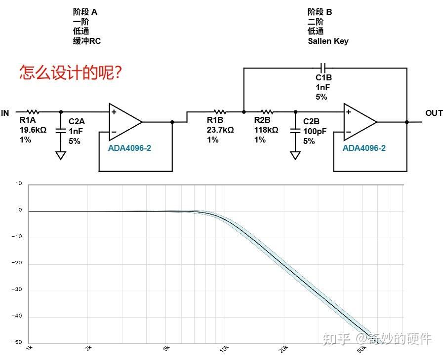
今天我们来就来讲一讲“有源滤波器”的原理和设计方法。仿真不同的典型拓扑：Sallen-key和****Multiple Feedback，解开它的神秘面纱！
三种“滤波器”对比
在此之前先简单对比以一下其他两个类型的滤波器
（一）RC滤波器：现在已经有非常成熟的小工具计算，如果你需要我把链接附在下面：
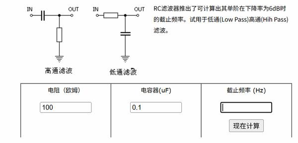
RC滤波器工具
（小工具链接：https://www.mwrf.net/tool/rf/2012/8212.html）
它的推导也十分简单，就是简验的分压定理，此处不做推导。(如果需要人多，可打“RC低通推导”在评论区,我再手搓一遍)
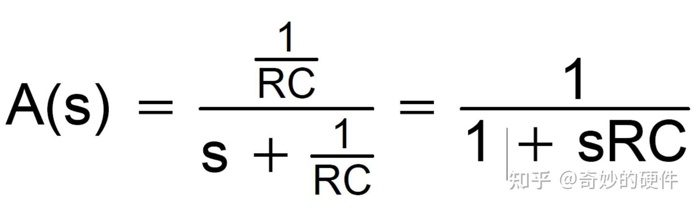
传递函数
这个是S域变换后的传递函数，其中S＝_ｊｗ_
（二）腔体滤波器： 这是一个单独的行业分支，有比较高的门槛，包括需要很深的腔体理论，结构设计以及可靠性试验。
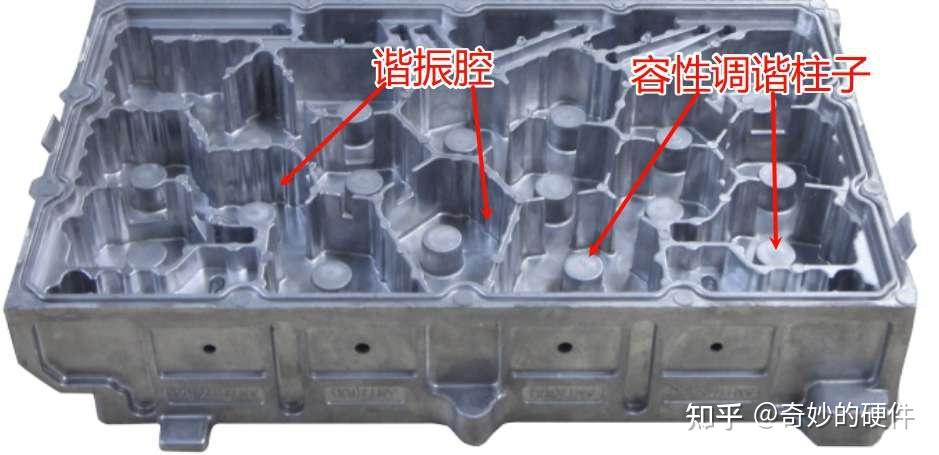
腔体滤波器
腔体滤波器的仿真,生产都需要大量人力，时间成本，价格一般比较昂贵。但好在性能非常优良且稳定**(插损小,抑制强,稳定可靠**)，在卫星，基站等产品上用的非常广泛
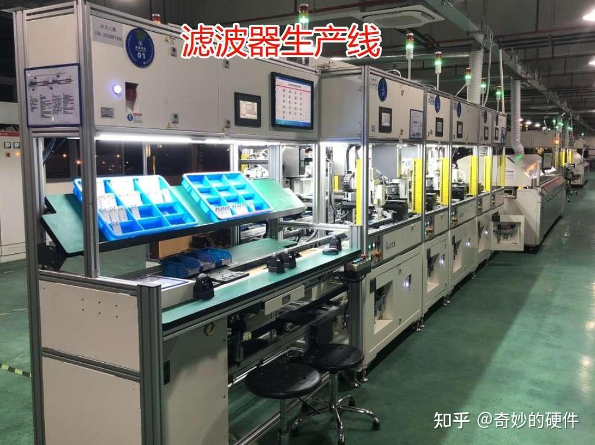
生产车间
最近的新技术“金属腔体免调螺滤波器 ”成为行业热点，大家感兴趣自搜
（三）有源滤波器： 是基于**运算放大器为核心的滤波电路**。有另外一套分析方法，具有仿真迭代速度快，价格便宜等优点。一般适用场景是低频（１ＭＨｚ以下）如“锁相环”电路,电源电路,“仪器仪表”电路等
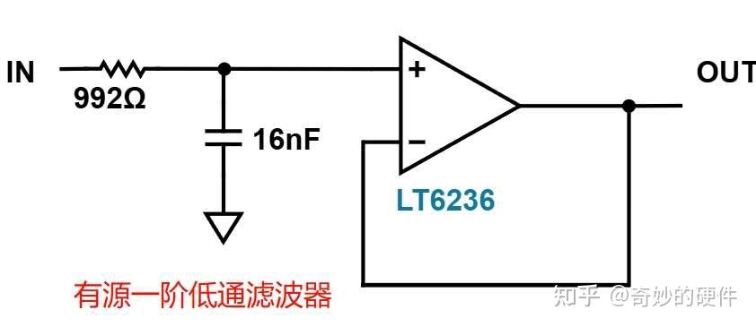
有源滤波器的传递函数，是根据无源RC滤波器的传递函数而来。如果是多级级联，传递函数也是一个道理。
“有源滤波器”的设计分析
（一）：一阶“RC+运放”分析
接下来直接上干货，还是上面滤波电路，我们把它剖开分析：
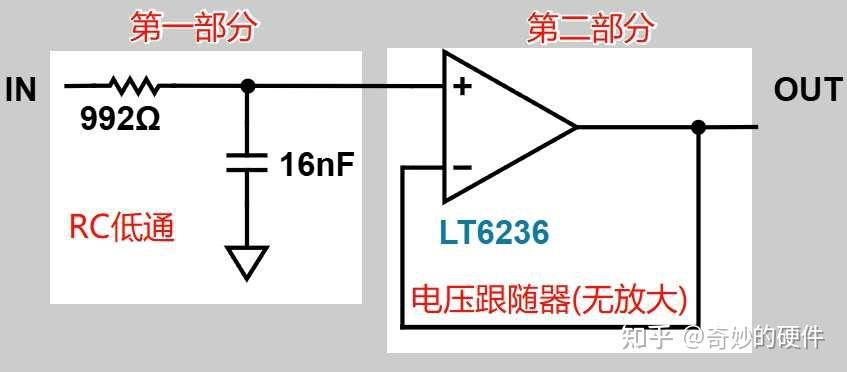
把它分成“第一部分”和“第二部分”。
第一部分：是一个标准的RC低通滤波器。
第二部分：是一个电压跟随器（无放大作用），起到隔离作用,并增强带负载能力
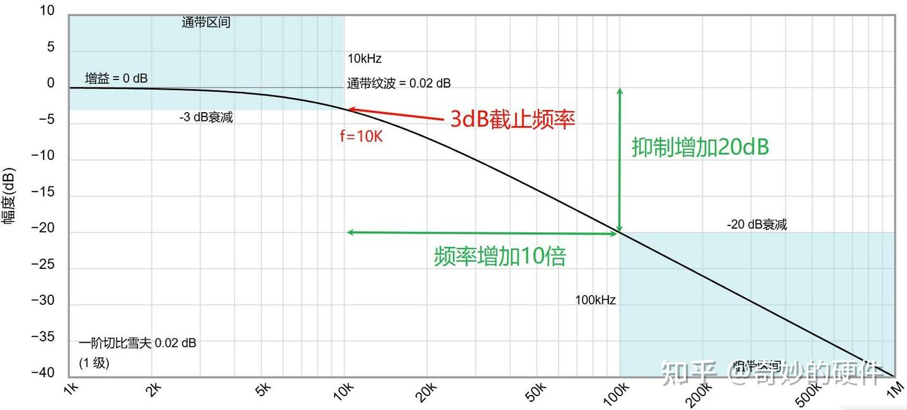
针对第一部分的标准RC波器来说，它的截止频率公式是：，如下图所示。截止频率为10K赫兹
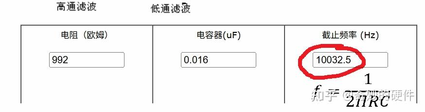
再加上运算放大器的负反馈一部分。两者的输出曲线其实并没有太大的变化(从截止频率来看)
那有源运放还有没有意义呢？我们接着看它的痛点问题！
痛点一：滤波曲线不陡峭！
十倍频程的频率变化，抑制仅下降了20dB，意味着即便在远端，可能也没有较好的滤波抑制效果，近端滤波效果更差。
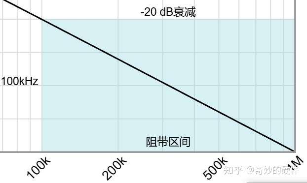
痛点二：负载调制问题！
RC滤波器：后面接负载往往具有不确定性。如果是一个具有频响特性的器件(阻抗随频率变化)，它的阻抗可能会影响RC滤波器的滤波效果。
典型的可能：导致截止频率发生变化，甚至波形发生变化等。而加了运放之后，就有较好的隔离效果。这在工程应用中非常实用
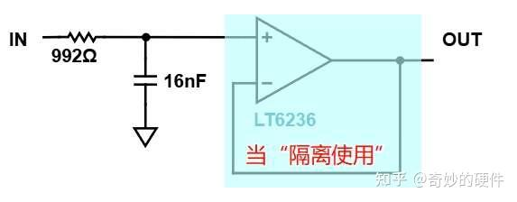
其他痛点问题
具有增益效果：既然加了运放，当然可以设计成带有增益的输出结果。这样可使滤波器的差损得到补偿
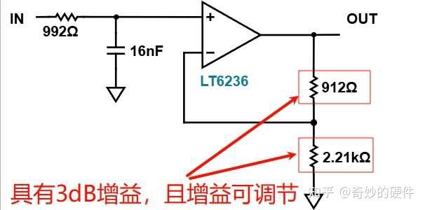
总结：
| 对比项 | 无源RC滤波 | 一阶有源RC |
|---|---|---|
| 滤波曲线 | ❌抑制曲线不陡峭（-20dB/十倍频程） | ✅可级联实现高阶滤波，设计灵活 |
| 隔离效果 | ❌无隔离功能，可能受到后级的负载调制影响 | ✅运放高输入阻抗+低输出阻抗实现隔离；✅带载能力强 |
| 增益输出 | ❌无增益，信号只能衰减输出 | ✅可设计增益（1～1000倍），同时保持滤波特性 |
（二）：二阶“RC+运放”分析
如果我们的输入端再接一组RC，变成两组RC。此时就变成了一个简单的二阶RC有源滤波器，如下图所示：
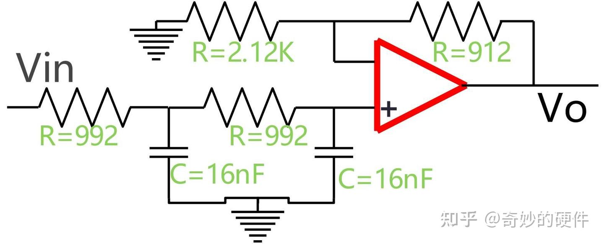
为了方便我们的仿真和计算。我们将此处电阻取值统一为R=992，电容取值统一为C=16nF；此外，为了能保证该有源增益输出，我们设计了分压电阻2.12K和912Ω，理论计算增益的计算结果如下：
Gain=(1+912/2120)=1.43(倍)
（由于前面还有RC器件，增益会有些许偏差） 为了进一步做验证，我们用仿真软件搭建电路：
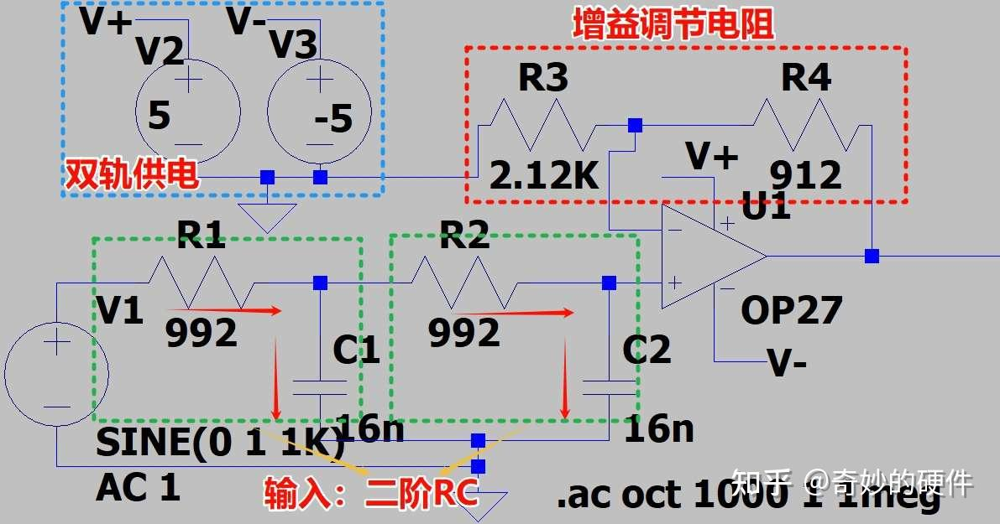
电路简介：可分为三部分.
(1)输入的二阶无源RC电路。 (2)增益可调节电阻；
(3)运算放大器op27—双轨供电
输入前仿真结果：
先看输入前的一阶和二阶RC无源部分：
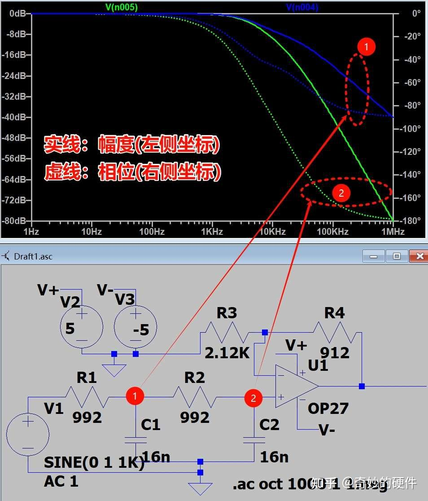
位置1和位置2分别是1阶和2阶的RC无源滤波仿真结果。我把曲线放到一起，可以明显看到二阶的无源滤波曲线更加陡峭，滤波效果更好。
整体仿真结果：
下图是输出点位置3对应的输出结果，输出有3dB的增益；并且它的输出曲线同样陡峭，证明抑制效果较好
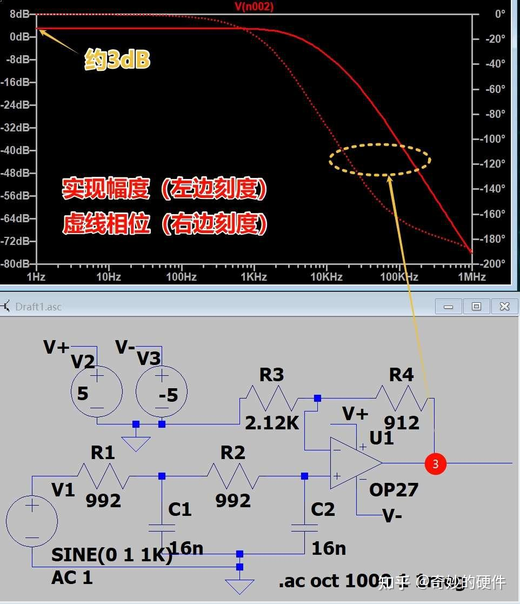
经典有源滤波拓扑：Sallen Key和MultiFeed Back
Sallen-Key拓扑设计
如果我们进一步提高通带带宽，且保持滚降系数不便，该怎么办呢？
Sallen-Key设计思路： 《1》如果要增强滤波效果，我们最先想到的是引入并联电容。那么这个并联电容能不能是输入端的RC电容呢？ 《2》 最好还要引入**正反馈**，将截止频率附近处的幅度先拉高。然后在急剧下降，来提高它的抑制斜率(见下图)
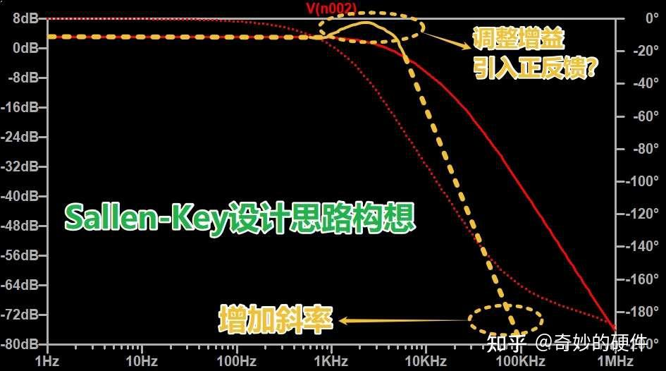
（注：负反馈加电容也能小范围提高抑制度，但效果不明显；另外，负反馈的电容更多用于调节相位裕度，来保证电路的稳定性）
下面我将电路做如下变形：一阶RC的电容去除接地线，并在输出端引入一个反馈，接到这个电容(红虚线)。由于这根线是接到同向端，故这是一个正反馈
变形完后，就得到一个标准的Sallen-Key拓扑。此时，他的反馈路径如红色虚箭头所示。
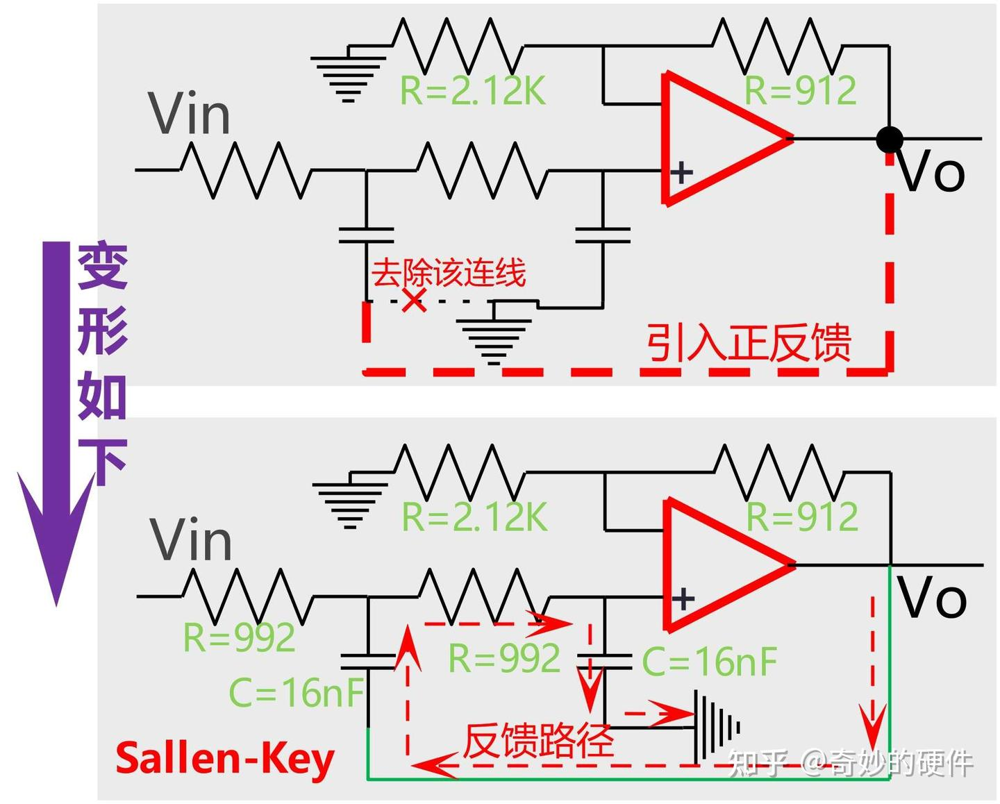
极端分析法：
● 当f→0时直流，正反馈截止(电容断路)，此项相当于缓冲器(电压跟随器)
● 当f→∞时直流，正反馈截止(电容断路) ➡️ 故存在某一个容值(f=fc时)，正反馈会起作用（此时担心正反馈的自激作用）
定性推导：
既然有自激风险，我们做一个定性推导，来判断自激条件是什么
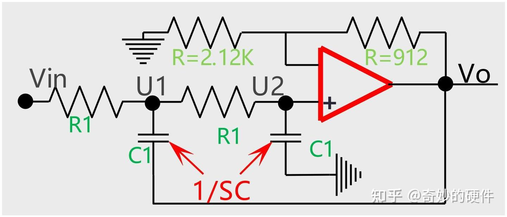
●通带增益得(负反馈增益)
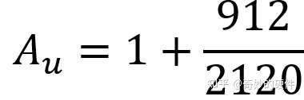
对上图列如下公式：
●对U2在U1电的分压得
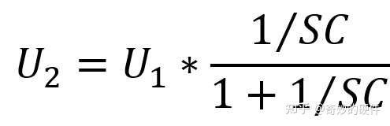
（注：电容得S域阻抗为1/SC） ●对U1节点使用KCL得
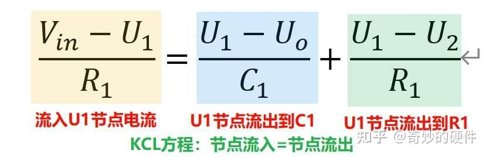
●联立上述三式可得（二阶传递函数）：
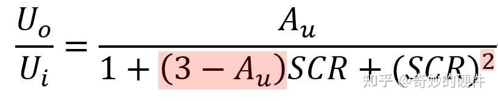
由于S得最高次幂为2，故这是2阶Sallen-Key有源滤波
结论：由传递函数知，实际使用过程中要保证增益Au<3dB，否则可能不稳定
仿真结果：
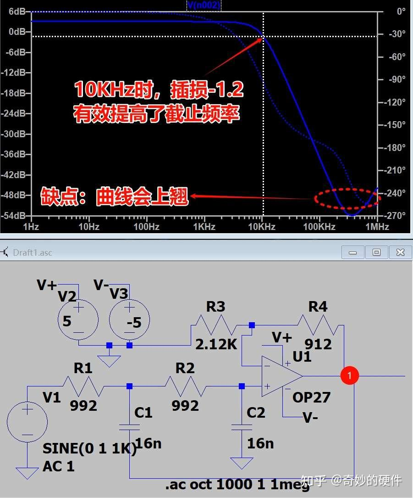
由仿真结果可知：
✱截止频率：带宽提高了(RC结构10Khz插损约为-8)。
✱缺点：滤波曲线在高频上会有上翘
Sallen-Key拓扑结构曲线高频上翘原因:实际的电容也是有带宽的，不可避免，需要通过其他手段,给他压下去（如后面并联高频率波电容，更换拓扑结构等）
MultiFeed Back拓扑设计
再次变换拓扑结构：MultiFeed Back（以下简称MFB）如下图所示：
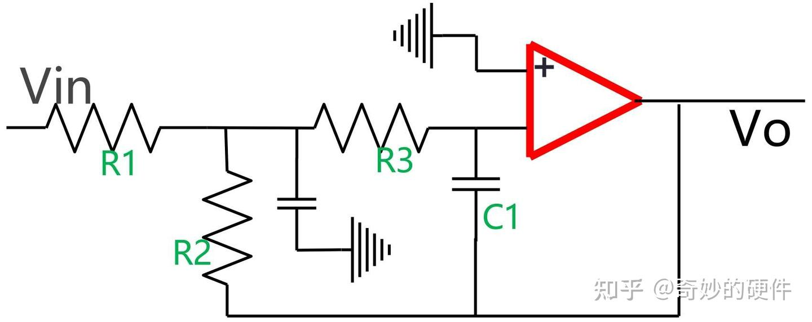
MFB拓扑变化： ●保持了一阶RC不变，将二阶RC的电容接入负反馈； ●增加一个电阻，也接入负反馈； ●输入端接到了放大器的反向端，输出信号会是反向的效果
由于同样也是二阶的滤波器，推导过程不赘述（直接看后文总结），直接看仿真结果：
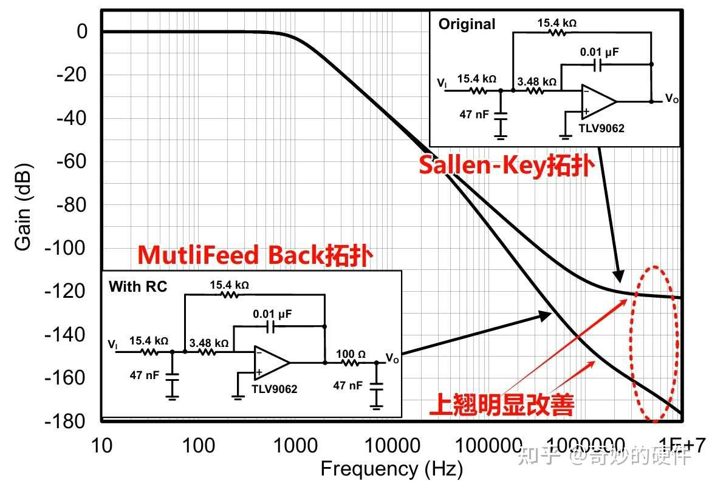
相同的器件搭建出来不同的拓扑结构，滤波的效果是不一样的。 MFB结构的高频上翘得到了明显改善
多提一句，MFB还能支持差分输出，将反向端的电路镜像到同向端即可，具体电路见下图：
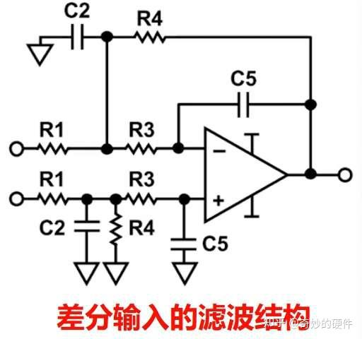
MFB和Sallen-Key拓扑总结
⚔️****传递函数对比：
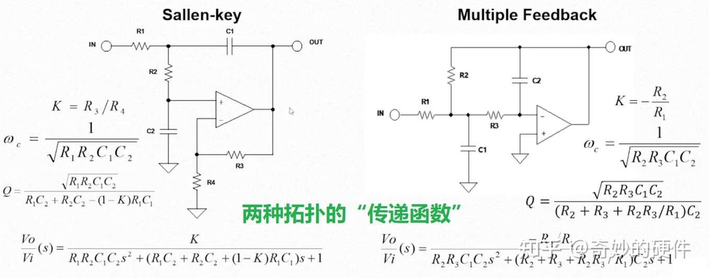
为了更清楚他们的拓扑选型和应用场景。我们在此处将两个拓扑结构做详细对比，供大家参考
| 特性 | Sallen-Key | MFB |
|---|---|---|
| 拓扑结构 | 电压控制电压源 (VCVS) | 反相放大器结构 |
| 信号相位 | 输出同相 | 输出信号相位反转 |
| 设计难度 | 较低（电阻/电容比值小） | 较高（需要精密元件匹配） |
| Q值 | 对元件值敏感，高Q实现困难 | 对元件变化较不敏感，易实现高Q |
| 带外抑制 | 受限，高频曲线上翘 | 优秀（负反馈提供更好抑制） |
| 适用拓扑 | 仅单端结构 | 支持单端和差分 |
| 运放要求 | 与运放带宽无关；可用CFB实现 | 需高增益带宽积运放（GBW） |
| 典型应用 | 基础低通/高通滤波器 | 高精度带通/低通滤波器 |
| 结构差异 | 非积分器结构 | 基于积分器结构 |
| 实现成本 | 较低（元件数量少） | 稍高（额外反馈元件） |
ADI有源滤波设计工具：
连接如下： https://tools.analog.com/cn/filterwizard/
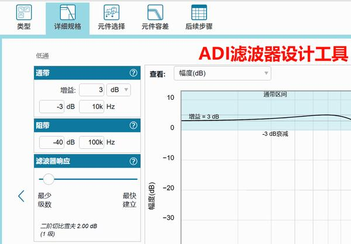
ADI有源滤波工具
友情提示：工具设计方便，我们也应该在了解它原理的基础上去使用。这样节省的时间成本，才是有意义的。后续使用应用场景出问题，也方便溯源